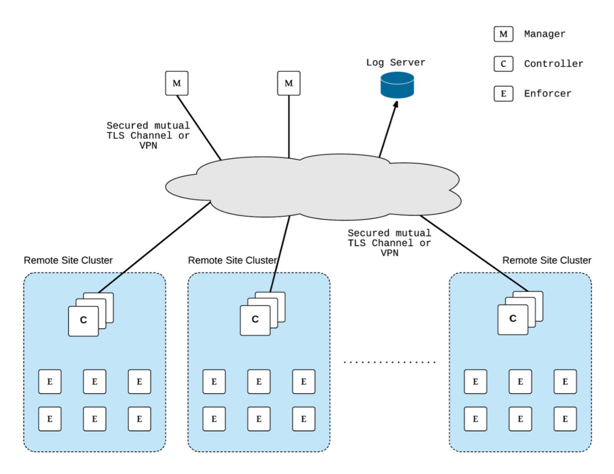

Deploying SUSE® Security
Planning Deployments
The SUSE® Security containers in a default deployment include the controller, manager, enforcer, scanner, and updater. Placement of where these containers (on which nodes) are deployed must be considered, and appropriate labels, taints or tolerations created to control them.
The enforcer should be deployed on every host/node where application containers to be monitored and protected by SUSE® Security will be running.
The controller manages the cluster of enforcers, and can be deployed on the same node as an enforcer or on a separate management node. The manager should be deployed on the node where the controller is running, and will provide console access to the controller. Other required SUSE® Security containers such as the manager, scanner, and updater are described in more detail in the Best Practices guide referenced below.
If you haven’t done so, pull the images from the SUSE® Security Docker Hub.
The images are on the SUSE® Security Docker Hub registry. Use the appropriate version tag for the manager, controller, enforcer, and leave the version as 'latest' for scanner and updater. For example:
-
neuvector/manager:5.3.2
-
neuvector/controller:5.3.2
-
neuvector/enforcer:5.3.2
-
neuvector/scanner:latest
-
neuvector/updater:latest
Please be sure to update the image references in appropriate yaml files.
If deploying with the current SUSE® Security Helm chart (v1.8.9+), the following changes should be made to values.yml:
-
Update the registry to docker.io
-
Update image names/tags to the current version on Docker Hub, as shown above
-
Leave the imagePullSecrets empty
Best Practices, Tips, Q&A for Deploying and Managing SUSE® Security
Download and review this Deployment Best Practices document for tips such as performance and sizing, best practices, and frequently asked questions about deployments.
Deployment Using Helm or Operators
Automated deployment using Helm can be found at https://github.com/neuvector/neuvector-helm.
Deployment using an Operator, including RedHat Certified Operator and Kubernetes community operator is supported, with a general description here. The SUSE® Security RedHat operator is at https://access.redhat.com/containers/#/registry.connect.redhat.com/neuvector/neuvector-operator, and the community operator at https://operatorhub.io/operator/neuvector-operator.
Deployment Using ConfigMap
Automated deployment on Kubernetes is supported using a ConfigMap. Please see the Deploying Using ConfigMap section for more details.
Deploying the Controllers
We recommend that multiple controllers be run for a high availability (HA) configuration. The controllers use the consensus based RAFT protocol to elect a leader and if the leader goes down, to elect another leader. Because of this, the number of active controllers should be an odd number, for example 3, 5, 7 etc.
Controller HA
The controllers will synchronize all data between themselves, including configuration, policy, conversations, events, and notifications.
If the primary active controller goes down, a new leader will automatically be elected and take over.
Take special precautions to make sure there is always one controller running and ready, especially during host OS or orchestration platform updates and reboots.
Backups and Persistent Data
Be sure to periodically export the configuration file from the console and save it as a backup.
If you run multiple controllers in an HA configuration, as long as one controller is always up, all data will be synchronized between controllers.
If you wish to save logs such as violations, threats, vulnerabilities and events please enable the SYSLOG server in Settings.
SUSE® Security supports persistent data for the SUSE® Security policy and configuration. This configures a real-time backup to mount a volume at /var/neuvector/ from the controller pod. The primary use case is when the persistent volume is mounted, the configuration and policy are stored during run-time to the persistent volume. In the case of total failure of the cluster, the configuration is automatically restored when the new cluster is created. Configuration and policy can also be manually restored or removed from the /var/neuvector/ volume.
|
If a persistent volume is not mounted, SUSE® Security does NOT store the configuration or policy as persistent data. Be sure to backup the Controller configuration and policy before stopping the allinone or controller container. This can be done in |
Persistent Volume Example
The PersistentVolume defined in the cluster is required for persistent volume support. The requirement for SUSE® Security is that the accessModes needs to be ReadWriteMany(RWX). Not all storage types support the RWX access mode. For example, on GKE you may need to create a RWX persistent volume using NFS storage.
Once the PersistentVolume is created, there needs to be created a PersistentVolumeClaim as below for Controller. Currently the persistent volume is used only for the SUSE® Security configuration backup files in the controller (Policies, Rules, user data, integrations etc) and registry scan results.
apiVersion: v1
kind: PersistentVolumeClaim
metadata:
name: neuvector-data
namespace: neuvector
spec:
accessModes:
- ReadWriteMany
volumeMode: Filesystem
resources:
requests:
storage: 1GiHere is an example for IBM Cloud:
apiVersion: v1
kind: PersistentVolumeClaim
metadata:
name: neuvector-data
namespace: neuvector
labels:
billingType: "hourly"
region: us-south
zone: sjc03
spec:
accessModes:
- ReadWriteMany
resources:
requests:
storage: 5Gi
iops: "100"
storageClassName: ibmc-file-retain-customAfter the Persistent Volume Claim is created, modify the SUSE® Security sample yaml file as shown below (old section commented out):
...
spec:
template:
spec:
volumes:
- name: nv-share
# hostPath: // replaced by persistentVolumeClaim
# path: /var/neuvector // replaced by persistentVolumeClaim
persistentVolumeClaim:
claimName: neuvector-dataAlso add the following environment variable in the Controller or Allinone sample yamls for persistent volume support. This will make the Controller read the backup config when starting.
- name: CTRL_PERSIST_CONFIGConfigMaps and Persistent Storage
Both the ConfigMaps and the persistent storage backup are only read when a new SUSE® Security cluster is deployed, or the cluster fails and is restarted. They are not used during rolling upgrades.
The persistent storage configuration backup is read first, then the ConfigMaps are applied, so ConfigMap settings take precedence. All ConfigMap settings (e.g. updates) will also be saved into persistent storage.
For more information see the ConfigMaps section.
Updating CVE Vulnerability Database in Production
Please see each sample section for instructions on how to keep the CVE database updated.
The CVE database version can be seen in the Console in the Vulnerabilities tab. You can also inspect the Updater container image.
docker inspect neuvector/updater"Labels": {
"neuvector.image": "neuvector/updater",
"neuvector.role": "updater",
"neuvector.vuln_db": "1.255"
}After running the update, inspect the controller/allinone logs for 'version.' For example in Kubernetes:
kubectl logs neuvector-controller-pod-777fdc5668-4jkjn -n neuvector | grep version
...
2019-07-29T17:04:02.43 |DEBU|SCN|main.dbUpdate: New DB found - create=2019-07-24T11:59:13Z version=1.576
2019-07-29T17:04:02.454|DEBU|SCN|memdb.ReadCveDb: New DB found - update=2019-07-24T11:59:13Z version=1.576
2019-07-29T17:04:12.224|DEBU|SCN|main.scannerRegister: - version=1.576Accessing the Console
By default the console is exposed as a service on port 8443, or nodePort with a random port on each host. Please see the first section Basics → Connect to Manager for options for turning off HTTPS or accessing the console through a corporate firewall which does not allow port 8443 for the console access.
Handing Host Updates or Auto-Scaling Nodes with a Pod Disruption Budget
Maintenance or scaling activities can affect the controllers on nodes. Public cloud providers support the ability to auto-scale nodes, which can dynamically evict pods including the SUSE® Security controllers. To prevent disruptions to the controllers, a SUSE® Security pod disruption budget can be created.
For example, create the file below nv_pdb.yaml to ensure that there are at least 2 controllers running at any time.
apiVersion: policy/v1beta1
kind: PodDisruptionBudget
metadata:
name: neuvector-controller-pdb
namespace: neuvector
spec:
minAvailable: 2
selector:
matchLabels:
app: neuvector-controller-podThen
kubectl create -f nv_pdb.yamlFor more details: https://kubernetes.io/docs/tasks/run-application/configure-pdb/
Deploy Without Privileged Mode
On some systems, deployment without using privileged mode is supported. These systems must support seccom capabilities and setting the apparmor profile.
See the section on Docker deployment for sample compose files.
Multi-site, Multi-Cluster Architecture
For enterprises with multiple locations and where a separate SUSE® Security cluster can be deployed for each location, the following is a proposed reference architecture. Each cluster has its own set of controllers and is separately managed.

See a more detailed description in this file > SUSE® Security Multi-Site Architecture